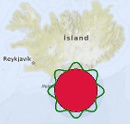

MapItemGroup QML Type
The MapItemGroup type is a container for map items. More...
| Import Statement: | import QtLocation 5.13 |
| Since: | QtLocation 5.9 |
Detailed Description
Its purpose is to enable code modularization by allowing the usage of qml files containing map elements related to each other, and the associated bindings.
Note: The release of this API with Qt 5.9 is a Technology Preview.
Example Usage
The following snippet shows how to use a MapItemGroup to create a MapCircle, centered at the coordinate (63, -18) with a radius of 100km, filled in red, surrounded by an ondulated green border, both contained in a semitransparent blue circle with a MouseArea that moves the whole group. This group is defined in a separate file named PolygonGroup.qml:
import QtQuick 2.4 import QtPositioning 5.6 import QtLocation 5.9 MapItemGroup { id: itemGroup property alias position: mainCircle.center property var radius: 100 * 1000 property var borderHeightPct : 0.3 MapCircle { id: mainCircle center : QtPositioning.coordinate(40, 0) radius: itemGroup.radius * (1.0 + borderHeightPct) opacity: 0.05 visible: true color: 'blue' MouseArea{ anchors.fill: parent drag.target: parent id: maItemGroup } } MapCircle { id: groupCircle center: itemGroup.position radius: itemGroup.radius color: 'crimson' onCenterChanged: { groupPolyline.populateBorder(); } } MapPolyline { id: groupPolyline line.color: 'green' line.width: 3 function populateBorder() { groupPolyline.path = [] // clearing the path var waveLength = 8.0; var waveAmplitude = groupCircle.radius * borderHeightPct; for (var i=0; i <= 360; i++) { var wavePhase = (i/360.0 * 2.0 * Math.PI )* waveLength var waveHeight = (Math.cos(wavePhase) + 1.0) / 2.0 groupPolyline.addCoordinate(groupCircle.center.atDistanceAndAzimuth(groupCircle.radius + waveAmplitude * waveHeight , i)) } } Component.onCompleted: { populateBorder() } } }
PolygonGroup.qml is now a reusable component that can then be used in a Map as:
Map {
id: map
PolygonGroup {
id: polygonGroup
position: QtPositioning.coordinate(63,-18)
}
}
